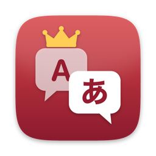

一次翻译整个模组
添加单个文件、本地化文件夹或整个模组，也可以直接拖放。可将多个模组加入队列，暂停、继续，或停止后下次接着处理。

Paradox Localization Translator适用于 Paradox 大战略游戏模组
为模组作者和玩家提供的免费桌面工具。可将 Crusader Kings III、Victoria 3、Hearts of Iron IV、Stellaris、Europa Universalis IV 和 V，以及 Imperator: Rome 的模组本地化文件翻译成游戏支持的 11 种语言中的任意一种，完整保留游戏格式代码，并帮助你查找和修复尚未翻译的内容。
Windows · macOS · Linux — 无需安装 Python
l_english:
trait_brave_desc:0 "[ROOT.Char.GetFirstName] fears nothing. §Y+2 Prowess§!"l_simp_chinese:
trait_brave_desc:0 "[ROOT.Char.GetFirstName]无所畏惧。§Y勇武 +2§!"添加单个文件、本地化文件夹或整个模组，也可以直接拖放。可将多个模组加入队列，暂停、继续，或停止后下次接着处理。
翻译过程中会保护 [ROOT.Char.GetName]、$VALUE$、£gold£ 和 §Y…§! 等格式代码，并在翻译后恢复，避免游戏文本出错。
查找未翻译的行，仅翻译这些内容。每项任务都有独立缓存：模组更新时会复用已翻译的行，只有新增或修改的行才会发送给 AI。
对于日语，会检查是否已有其他模组提供翻译，以及翻译是否完整。先备份并确认后，可将缺失的行添加到翻译模组，而不是原始模组中。
并排对照原文和译文，运行质量检查，直接搜索和修改任意一行，并为每种语言维护术语表，让名称和术语保持一致。
使用 Ollama 或 LM Studio 运行本地模型，免费且保护隐私；也可使用 OpenAI、Anthropic、Google Gemini 或任何兼容 OpenAI 的 API。API 密钥不会保存到设置、配置文件或日志中。
截图展示的是应用的日语界面；计划提供简体中文界面。
本工具可翻译成全部 11 种官方语言。每款游戏只能读取其中部分语言；如果选择了游戏无法显示的语言，工具会在开始前提醒。支持自动检测 Crusader Kings III、Victoria 3、Hearts of Iron IV、Stellaris 和 Europa Universalis V 的模组；Europa Universalis IV 和 Imperator: Rome 的文件或文件夹需要手动添加。
| 游戏 | EN | JA | FR | DE | ES | KO | PL | PT | RU | ZH | TR |
|---|---|---|---|---|---|---|---|---|---|---|---|
| Victoria 3全部 11 种 | ✓ | ✓ | ✓ | ✓ | ✓ | ✓ | ✓ | ✓ | ✓ | ✓ | ✓ |
| Europa Universalis V全部 11 种 | ✓ | ✓ | ✓ | ✓ | ✓ | ✓ | ✓ | ✓ | ✓ | ✓ | ✓ |
| Hearts of Iron IV10 种语言 | ✓ | ✓ | ✓ | ✓ | ✓ | ✓ | ✓ | ✓ | ✓ | ✓ | – |
| Stellaris10 种语言 | ✓ | ✓ | ✓ | ✓ | ✓ | ✓ | ✓ | ✓ | ✓ | ✓ | – |
| Crusader Kings III9 种语言 | ✓ | ✓ | ✓ | ✓ | ✓ | ✓ | ✓ | – | ✓ | ✓ | – |
| Imperator: Rome6 种语言 | ✓ | – | ✓ | ✓ | ✓ | – | – | – | ✓ | ✓ | – |
| Europa Universalis IV4 种语言 | ✓ | – | ✓ | ✓ | ✓ | – | – | – | – | – | – |
✓ = 游戏可显示此语言
启动 Ollama 或 LM Studio 并加载模型，或准备好云端服务的 API 密钥。
从最新版本中选择适合你操作系统的文件。
在「模型 / 连接」中选择服务提供商和模型。
添加文件、文件夹或模组（也支持拖放），选择目标语言，然后点击「开始翻译」。
在「QA / 对比编辑」中检查结果，然后将完成的译文写入模组。写入前会先创建备份。
Ollama 或 LM Studio，以及擅长使用目标语言的模型（例如 Qwen 或 Gemma 模型）。
OpenAI、Anthropic、Google Gemini 或兼容 OpenAI 的服务的 API 密钥。使用费用由相应服务收取，本工具不收取。
如果你在 Steam Workshop 或其他平台分享使用本工具制作的翻译，请：
捐赠通过 GitHub Sponsors 进行，由 VF Software Co., Ltd. 接收。捐赠用于支持包括本工具在内的所有工作的开发时间和费用。所有功能始终对所有人免费，捐赠不会解锁任何内容。
在 GitHub 上赞助 ♥是的。所有功能均按 MIT 许可证向所有人免费提供，没有付费版本。
翻译、补全未翻译行、QA、搜索和术语表支持全部 11 种语言。模组调查、翻译模组检测与关联、仅翻译更新内容、基于中文翻译和自动构建术语表目前仅支持日语。其他语言的质量检查较简单：韩语、俄语和简体中文按文字系统检查；拉丁字母语言之间只会标记与原文完全相同的行。
本应用未经 Apple 签名。请打开系统设置 → 隐私与安全性，允许打开应用。
本应用未进行代码签名。请仅从官方 GitHub Releases 页面下载，然后选择「更多信息」→「仍要运行」。
可以，但 Workshop 更新可能覆盖你的修改。工具会保留备份；对于重要的翻译，请另存一份副本。
在 GitHub 上提交 issue。如有可能，请附上在「设置」→「收集诊断日志」中生成的诊断 ZIP，并说明操作步骤。ZIP 不包含译文或 API 密钥。